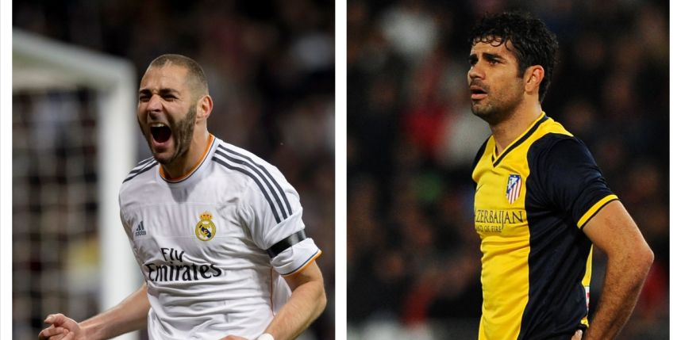

News !!
La coupe du monde débutant dans une dizaine de jour, on en oublierait presque que la finale de la plus prestigieuse competition du
football de club a lieu ce Samedi 24 Mai. Une finale qui opposera deux clubs Madrilène, le Real qui dispose de la meilleure attaque
de la competition avec 34 buts inscrits et l'Athletico fort de son invincibilité sur la competition. Le Real est arrivé en finale
en terassant l'ogre Munichois, tandis que l'Athletico a lui sortie le Chelsea de José Mourihno, cependant les deux adversaires pourraient
se retrouver amputer de leurs avant centres, Karim Benzema et Diego Costa les deux joueurs étant blessés. Carlo Ancelotti reste sur la reserve
concernant Karim Benzema disant qu'il ne prendra pas de risque sur sa santé. Quand à lui Diego Simeone joue la montre pour bluffer l'adversaire,
il dispose d'alternatives importantes avec David Villa par exemple. Esperont que les deux avant-centres seront disponibles pour un grand match remplit
de buts afin de nous emerveillé et de nous allecher en attendant la Coupe du monde 2014 débutant le 12 Juin.

Karim Benzema à Gauche, Diego Costa à Droite